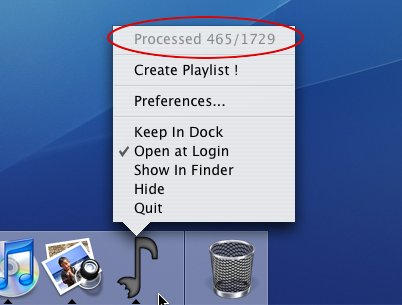
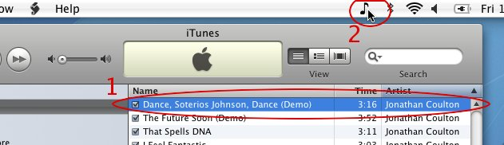
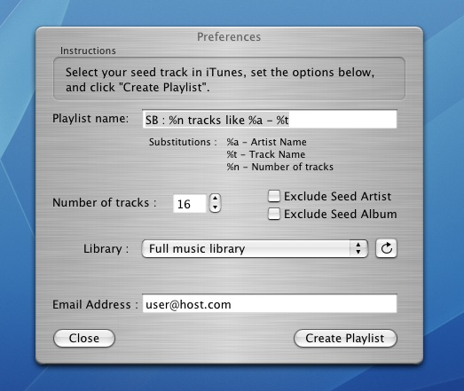

SoundBite Readme
Version beta-0.8, January 2014
Introduction
SoundBite is the quickest and easiest way to create great-sounding playlists in iTunes. Once installed, SoundBite will get to know your music collection and when it's done, you're ready to create playlists to suit your mood with just a couple of mouse clicks !
It really is simple to set up and use - Just run the installer, let SB analyse your music, then click the icon at the top of the screen to create a playlist based on your currently selected track in iTunes. If you'd like to know more about any of these steps, read on for :
1. Installation
2. Creating Playlists
3. Setting Preferences
4. Specialised Searches
5. Quitting / Uninstalling
6. DRM-Protected Tracks
7. Frequently Asked Questions
8. Privacy and Contact Information
1. Installation
SoundBite is distributed for Apple computers as a Disk Image (.dmg) file containing the installer and this readme file. Once downloaded, double-click the disk image to open it, and then double-click the installer to run. The installer will place SoundBite in your Applications folder and set it up to run on startup. This is strongly recommended so that SoundBite is always up to date on new additions to your music library, but if you'd prefer that SoundBite didn't start automatically, you can disable it in the dock menu by deselecting "Open at Login".
The installer will start SoundBite automatically and you'll notice a new icon in the Dock and a smaller icon in your menu bar - More on this below ! That's all there is to installing SoundBite, but if you'd like to configure it further, see the "Setting Preferences" section.
2. Creating playlists
Before it can create playlists from your collection, SoundBite has to analyse your music - It will do this automatically in the background, and will notice when you add or remove music from your collection. You can check on its progress at any time in the dock menu :

Depending on the speed of your computer and the size of your collection, the analysis can take a while (around 5 seconds per track on a late-generation G4 or Intel Mac). We recommend waiting until your whole collection has been analysed for the best results. If you just can't wait you can begin creating playlists at any time, but only those tracks which have been analysed can be used as seed tracks or included in playlists.
To create a playlist with SoundBite, select a track in iTunes which you'd like the playlist to sound like - We call this the "seed track" for the playlist. Then click on the SoundBite icon in the menu bar :

It's as simple as that ! Your new playlist will appear in iTunes and you can add tracks or delete tracks as usual to get your new playlist exactly right.
3. Setting Preferences
If you'd like to change the name of playlists SoundBite creates, or the number of tracks it puts in each playlist, you can do so via the Preferences window (select "Preferences..." from the dock menu).

You can put whatever you like in the "Playlist name" field, but we recommend including the special codes %a and %t which will automatically be replaced with the Artist and Track Name respectively when the playlist is created.
For example, if you set the playlist name to "Songs like %t by %a" and create a playlist with seed track "Lola" by "The Kinks", your playlist will be called "Songs like Lola by The Kinks".
You can also change the number of tracks SoundBite chooses for each playlist. Small playlists tend to sound more like the seed track, while choosing a large number of tracks will lead to a more varied playlist.
4. Specialised searches
Since tracks by the same artist or from the same album often sound similar, SoundBite playlists often include many tracks from the seed artist or seed album. If you'd prefer to avoid these tracks, you can enable the "Exclude Seed Artist" and/or "Exclude Seed Album" checkboxes in the Preferences window. If you'd like to get recommendations in the same genre as that of the seed track, you can enable the "Keep Seed Genre" checkbox in the Preferences window (please note that the results will depend on whether the genre of the seed track is known and accurate).
To allow you even finer control over which tracks SoundBite considers when building a playlist, you may choose a particular playlist as the music library for all your SoundBite playlists. This means you can search within particular parts of your collection and is particularly useful when combined with iTunes Smart Playlists.
For example, to exclude podcasts from your SoundBite playlists, just create a smart playlist in iTunes called "Not podcasts" with the criteria "Podcast is false", and select this as your library in SoundBite.
Another possibility is to create a playlist excluding particular genres, artists or tracks to make sure SoundBite never chooses those when creating playlists.
5. Quitting / Uninstalling SoundBite
We recommend you leave SoundBite running in the background even when you're not using it, to make sure it's up to date with your music collection the next time you want to create a playlist. However, if you'd like to quit SoundBite, just choose "Quit" from the dock menu. Analysis of your collection will be suspended until you next run SoundBite from your Applications folder.
To uninstall SoundBite drag it from your Applications folder to the trash. If you'd like to remove SoundBite's support files also, browse to Library/Application Support/ from your home folder and remove the SoundBite folder. Note that if you choose to remove these support files and later re-install SoundBite, your music library will have to be analysed again.
6. DRM-Protected tracks
Unfortunately SoundBite is currently unable to analyse tracks protected with DRM technology, including those sold by the iTunes Music Store. If there are DRM tracks in your collection they won't be included in SoundBite playlists. We hope to be able to offer this functionality soon, so be sure to look out for the next version of SoundBite on www.isophonics.net !
7. Frequently Asked Questions
- Can I use SoundBite for multiple users on the same Mac ?
- While SoundBite can be run by multiple users and will work with their individual iTunes music collections, it should not be run simultaneously for more than one user. This means that one user must quit SoundBite or log out before another user runs SoundBite.
- Why isn't the first track in the playlist the seed track I asked for ?
- Occasionally SoundBite can get "out of sync" with the iTunes library, leading to this temporary problem. This should automatically be resolved within a minute or two - please wait a minute and then try creating the playlist again.
- Why isn't my new playlist shown in the Preferences window's Library dropdown ?
- Occasionally SoundBite can get "out of sync" with the iTunes library, leading to this temporary problem. This should automatically be resolved within a minute or two - please wait a minute and then press the refresh button in the preferences window
8. Privacy and Contact Information
To enable future versions of SoundBite to make recommendations from outside your collection, SoundBite sends information to Isophonics about its analysis (text metadata and some numerical results from our analysis algorithms). If you'd prefer that this was anonymous, simply leave the email field blank in the Preferences window.
If you've had any problems, would like to suggest improvements, or just want to tell us what you think of SoundBite, please email us at feedback@isophonics.net.
We hope you'll enjoy using SoundBite !
The research and development of SoundBite was carried out by Mark Levy, Mark Sandler, Chris Sutton and Mathieu Barthet.
Copyright 2006-2014 Centre for Digital Music at Queen Mary, University of London, All rights reserved.